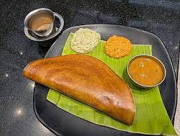

Home
Masala Dosa

Masala Dosa is a popular South Indian dish made from fermented rice and lentil batter, filled with a spicy potato filling and served with chutney.
Ingredients
- 1 cup urad dal (split black gram)
- 2 cups rice
- 1 teaspoon turmeric powder
- Salt to taste
- Oil for frying
- 1 large onion, chopped
- 2 potatoes, boiled and mashed
- 1 tablespoon ginger-garlic paste
- 1 teaspoon red chili powder
- 1 teaspoon cumin seeds
- 2 tablespoons oil
Steps
- Soak the urad dal and rice separately for 30 minutes.
- Grind the soaked urad dal and rice into a smooth batter.
- Add salt and turmeric powder to the batter and let it ferment for 8-10 hours.
- In a pan, add oil and cumin seeds. Once they splutter, add the chopped onions and sauté until golden brown.
- Add the ginger-garlic paste and red chili powder. Cook for a minute.
- Add the mashed potatoes and mix well. Cook for 5 minutes.